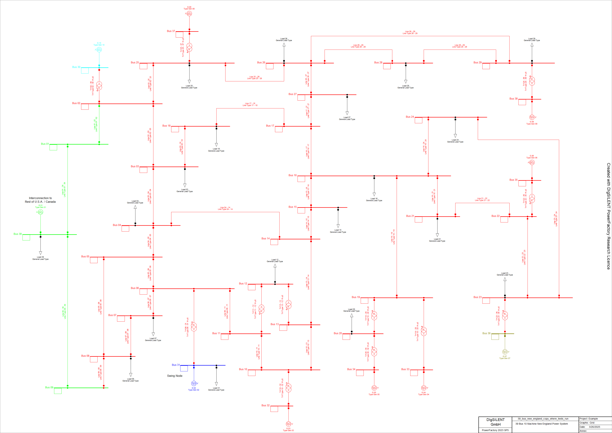
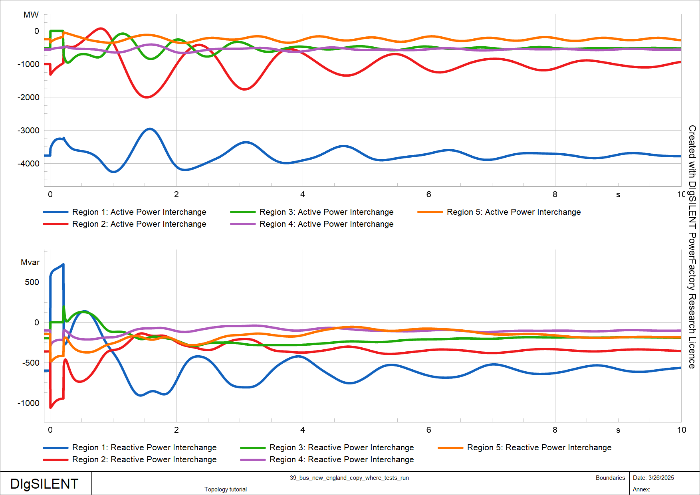
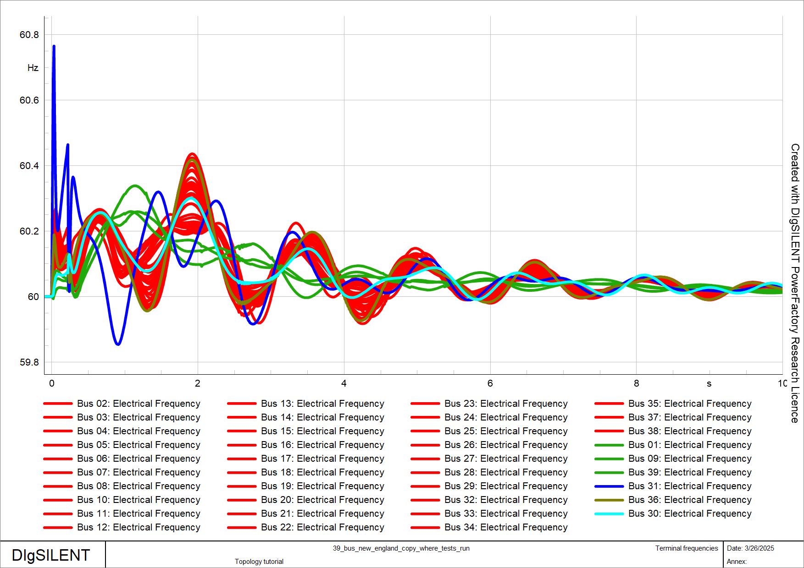

This tutorial focuses on network topologies, specifically the organization of network elements into boundaries, zones and areas. The main topics covered include:
Creating and using boundaries
Creating and using zones
Creating and using areas
Additional useful methods of powfacpy for groupings (boundaries, areas, zones)
First, we activate the PowerFactory project of the IEEE 39 bus system example, create a copy of a stable study case and activate it.
# If you use IPython/Jupyter:import syssys.path.append(r"C:\Program Files\DIgSILENT\PowerFactory 2023 SP5\Python\3.11") # you may use a different directory# Get the PF appimport powerfactoryfrom powfacpy.base.active_project import ActiveProjectfrom powfacpy.pf_classes.protocols import PFAppapp = powerfactory.GetApplication()pf_app: PFApp = powerfactory.GetApplication()act_prj = ActiveProject(pf_app)act_prj.app.Show()act_prj.app.ActivateProject("powfacpy\\39_bus_new_england_copy_where_tests_run") # You may change the project path.study_case = act_prj.copy_single_obj("Study Cases\\2.3 Simulation Fault Bus 31 Stable", "Study Cases", new_name="Topology tutorial")study_case.Activate()act_prj.create_variation("Topology tutorial")
There are various classes to group network objects in PowerFactory including - areas (ElmArea), - zones (ElmZone), - boundaries (ElmBoundary).
Areas and zones are very similar. One of their disadvantages is that it is not possible for one network element to be part of more than one area/zone. Boundaries on the other hand are more flexible and there is no such restriction, i.e. one element can be included in more than one boundary. Note also that the zone/area classes provide a method to define a boundary (DefineBoundary) that includes their internal elements. More information can be found in the PowerFactory manual in the chapter on Grouping Objects.
We will examine an example in which the terminals of the IEEE 39 bus system are categorized into several regions. Each terminal is assigned to a specific region. These regions have been preselected based on coherency identification, as referenced in @khalilDynamicCoherencyIdentification2016. The configuration includes one large region and several smaller regions, as detailed in the following list of elements.
We will use the Topology class of powfacpy to create the regions. The lists with terminal names in coherent_regions_terminals assigned above are iterated and the method create_boundary_using_intermediate_zone is used, which creates a boundary by creating a zone in an intermediate step (first creating a zone is a convenient way to create a boundary). The method allows to exclude elements. In the example below, all loads (ElmLod) are excluded from the boundaries.
from powfacpy.applications.topology import Topologyfrom powfacpy.pf_classes.elm.boundary import Boundarytry: app.Hide() act_prj.clear_folder(act_prj.boundaries_folder) topo = Topology() boundaries: list[Boundary] = []for n, terminals inenumerate(coherent_regions_terminals): terminal_objs = [act_prj.get_calc_relevant_obj(term +".ElmTerm")[0] for term in terminals] boundary = topo.create_boundary_using_intermediate_zone("Region "+str(n+1), terminal_objs, exclude_node_elms=lambda x: x.GetClassName() =="ElmLod", color=n+2, ) boundaries.append(Boundary(boundary))finally: app.Show()
Warning
Note that the method create_boundary_using_intermediate_zone might change existing zones in the network model if their elements are included in the boundary (because elements can only be part of one zone). To avoid this use ‘create_boundary_without_changing_initial_zones’ instead.
The objects of class Boundary are stored in the boundaries list in the loop above. The Boundary class of powfacpy offers some convenient methods, for example to visualize the interior of (all) boundaries in the single line diagram.
from powfacpy.applications.plots import Plotsfrom os import getcwdpf_plt = Plots(app)pf_plt.set_active_graphics_page("Grid")boundary_1 = boundaries[0]boundary_1.show_boundary_interior_regions_in_network_graphic()
The regions are now illustrated in the single line diagram. Apparently, loads are excluded from the interior of the boundaries. 
We will now crate plots showing the active and reactive power exchange of the boundaries as well as the frequencies of the terminals.
from powfacpy.result_variables import ResVarRMS_BAL = ResVar.RMS_Baltry: app.Hide() pf_plt.clear_plot_pages()for n, boundary inenumerate(boundaries): pf_plt.set_active_plot("Active power", "Boundaries") pf_plt.plot(boundary.obj, boundary.get_P_exchange_res_var_rms_bal()) pf_plt.set_active_plot("Reactive power", "Boundaries") pf_plt.plot(boundary.obj, boundary.get_Q_exchange_res_var_rms_bal()) pf_plt.set_active_plot("Frequency", "Terminal frequencies")for term in coherent_regions_terminals[n]: terminal_obj = act_prj.get_calc_relevant_obj(term +".ElmTerm")[0] pf_plt.plot(terminal_obj, RMS_BAL.ElmTerm.m_fehz.value, color=n+2)finally: app.Show()
Executing an RMS simulation gives the following results. As shown in the frequency plot, the frequencies at coherent terminals oscillate in phase.
from powfacpy.applications.dynamic_simulation import DynamicSimulationpfds = DynamicSimulation(app)pfds.initialize_and_run_sim(param_simulation={"tstop": 10})

power-exchange-regions

frequencies-coherent-terminals
2 Zones
The topology class also allows to create zones. For example a zone for the first region in coherent_regions_terminals can be created as follows:
from powfacpy.pf_classes.elm.zone import Zoneterminal_objs_of_region_1 = [act_prj.get_calc_relevant_obj(term+".ElmTerm")[0] for term in coherent_regions_terminals[0]]zone_obj = topo.create_zone("Region 1", terminal_objs_of_region_1)
The Zone class of powfacpy can then be used to display zones in the single line diagram.
The ElmArea class of PowerFactory is very similar to the ElmZone class and so is the Area class of powfacpy compared to the Zone class.
from powfacpy.pf_classes.elm.area import Areaarea_obj = topo.create_area("Region 1", terminal_objs_of_region_1)area_1 = Area(zone_obj)area_1.show_areas_in_network_graphic()
4 Common Methods of Grouping Classes
Classes of powfacpy that group objects (like Boundary, Zone and Area) have common methods which are defined in the abstract base class GroupingBase. Here are some examples using the zone and boundary instances created above.
try: app.Hide()# All internal elements elms = boundary_1.get_all_internal_elms() elms = zone_1.get_all_internal_elms()# Get internal elements with condition elms = boundary_1.get_internal_elms(condition=lambda x: x.GetClassName()=="ElmTerm"and x.uknom >300) elms = zone_1.get_internal_elms(condition=lambda x: x.GetClassName()=="ElmTerm"and x.uknom >300)# Get internal elements of class elms = boundary_1.get_internal_elms_of_class("ElmLne") elms = zone_1.get_internal_elms_of_class("ElmLne")# Get results variable for active power exchange in RMS simulations p_res_var = boundary_1.get_P_exchange_res_var_rms_bal() p_res_var = zone_1.get_P_exchange_res_var_rms_bal()finally: app.Show()